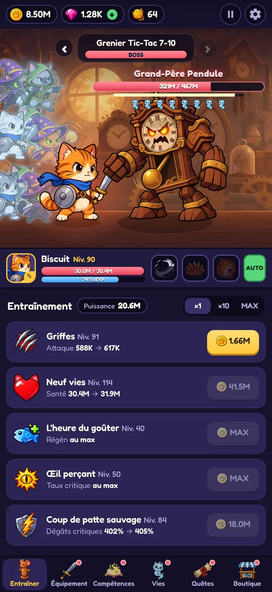
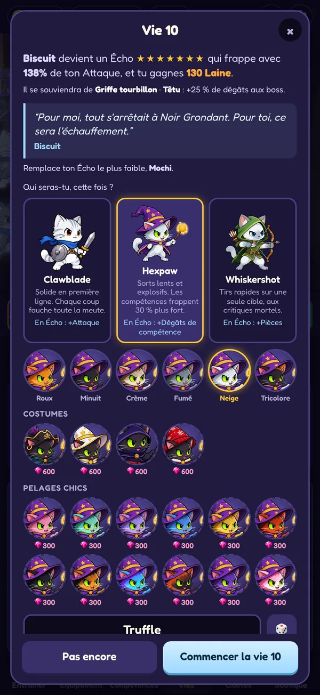
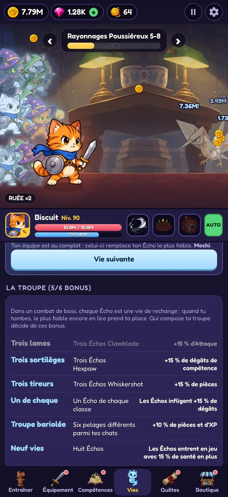
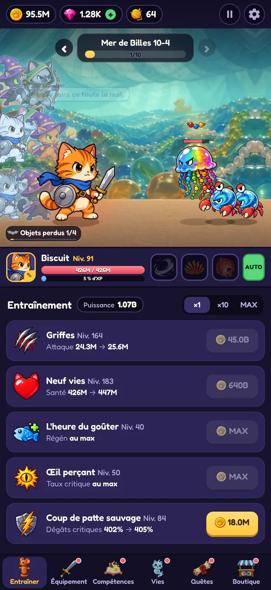
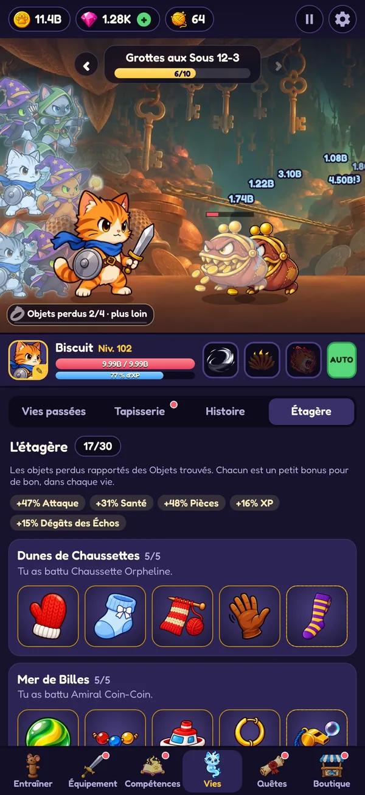
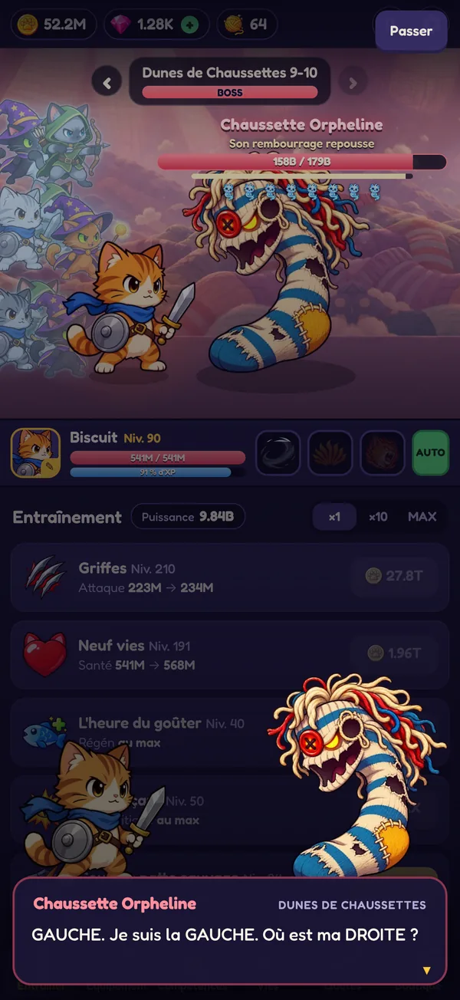

Pawst Lives
Le RPG idle où votre équipe, ce sont vos propres vies passées.
Un chat a neuf vies. Les vôtres se battent toutes en même temps. Quand une vie est allée aussi loin qu'elle le peut, vous commencez la suivante, et le chat que vous étiez revient sous forme d'Écho : un fantôme qui se bat désormais à vos côtés.
Télécharger dans l'App Store : gratuitPour iPhone et iPad. Pas de publicité. Pas de compte. Jouable hors ligne.

Neuf chats. Un héros. Tous à vous.
Quand les lumières s'éteignent, la maison devient un donjon. L'arroseur du jardin est une hydre. Le grille-pain est un dragon. Et quelque part dans le noir, sous l'escalier, l'aspirateur attend.
Vivez une vie
Jouez en Clawblade, Hexpaw ou Whiskershot. Votre chat se bat tout seul pendant que vous l'entraînez, l'équipez de ce qu'il trouve et choisissez le moment de ses compétences.
Finissez-la bien
Quand un boss ne tombe pas, commencez votre vie suivante. Plus l'ancienne est allée loin, plus l'Écho qu'elle laisse est fort.
Battez-vous aux côtés de vos fantômes
Jusqu'à huit Échos vous rejoignent, chacun gardant la compétence qu'il a le plus entraînée. Si un boss vous met à terre, un Écho prend votre place : chacun est une vie de rechange.
À quoi ça ressemble
Chaque image montre le jeu tel qu'il tourne sur un iPhone. Sur un iPad, c'est le même jeu, en plein écran.






Idle quand vous voulez, aux commandes sinon
Il joue tout seul quand vous n'avez pas le temps, et vous récompense quand vous l'avez.
Une maison hantée
Huit salles, du Portail du Jardin jusqu'au Noir Grondant, chacune avec ses monstres et son boss. Des Crabes en boîte. Des Gobelins-chaussettes. Une machine à laver à tentacules.
Toujours quelque chose à améliorer
Entraînez cinq statistiques, montez trois compétences par classe, renforcez quatre emplacements d'équipement et tissez dans la Tapisserie des améliorations qui ne sont jamais remises à zéro.
Formez une troupe
Des bonus pour trois Échos de la même classe, un de chaque classe, six pelages différents ou les huit au complet.
Des siestes, pas des corvées
Quand vous partez, vos chats font la sieste. Au retour, quelques pièces vous attendent et un chat bien reposé gagne le double pendant un moment.
Touchez, visez le bon moment ou laissez faire
Bondissez sur un ennemi, gardez une compétence pour le bon moment ou laissez tout en automatique.
Des cadeaux chaque jour
Des quêtes quotidiennes, des exploits et un cadeau du jour, qui rapportent tous des gemmes que vous n'avez jamais à acheter.
Honnête et discret
Fait par une seule personne, qui voulait un jeu qui vous laisse tranquille.
- Pas de publicité
- Pas de compte
- Pas de pistage
- Jouable hors ligne
Rien n'est collecté à votre sujet : l'étiquette de confidentialité du jeu dans l'App Store indique qu'aucune donnée n'est collectée, et la politique de confidentialité (en anglais) tient en une page. Le jeu est gratuit, avec six achats facultatifs (des gemmes et deux améliorations à achat unique, valables pour toujours) et sans abonnement. Rien dans le jeu ne les exige, et rien de ce que vous achetez n'est laissé au hasard : il n'y a pas de coffres à butin.
L'iPad, cinq langues de plus, et plus de hasard dans la Boutique
- iPad. Tout le jeu, en plein écran.
- Votre partie vous suit. Elle est gardée dans votre propre iCloud en plus de votre appareil : un nouvel iPhone ou un iPad retrouve vos chats là où vous les aviez laissés. Toujours pas de compte.
- Français, espagnol, portugais (Brésil), allemand et japonais. Tout le jeu, histoire comprise. Il suit la langue de votre appareil, et les Réglages ont une carte Langue si vous préférez jouer dans une autre.
- Pas de coffres à butin. Le Coffre d'équipement ne laisse plus rien au hasard : il vous montre ses quatre objets et vous en choisissez un.
- Des rappels, si vous en voulez. Désactivés tant que vous ne les activez pas.
Questions
Pawst Lives est-il gratuit ?
Oui. Le téléchargement est gratuit et l'on peut jouer jusqu'au bout sans payer. Il y a six achats intégrés facultatifs : quatre lots de gemmes et deux améliorations à achat unique, valables pour toujours. Il n'y a pas d'abonnement.
Y a-t-il de la publicité ?
Non. Il n'y a aucune publicité, et il n'y en a jamais eu.
Peut-on jouer hors ligne ?
Oui. Tout le jeu fonctionne sans connexion. Quand vous êtes en ligne, les récompenses quotidiennes vérifient la vraie date.
Qu'est-ce qu'un RPG idle ?
Un jeu de rôle qui avance tout seul. Dans Pawst Lives, vos chats se battent d'eux-mêmes ; vous décidez quoi entraîner, quoi leur faire porter, quand lancer une compétence et quand une vie est allée assez loin pour commencer la suivante.
Faut-il un compte ? Que collecte le jeu ?
Pas de compte ni de connexion, et le jeu ne collecte rien à votre sujet. Voir la politique de confidentialité (en anglais).
Existe-t-il sur iPad ou sur Android ?
Il fonctionne sur iPhone et iPad, et une partie gardée dans votre iCloud passe de l'un à l'autre. Il n'y a pas de version Android.
Dans quelles langues est-il ?
En français, anglais, espagnol, portugais (Brésil), allemand et japonais. Le jeu suit la langue de votre appareil, et les Réglages ont une carte Langue pour en choisir une autre.
Quelque chose ne marche pas. Où trouver de l'aide ?
La page d'aide (en anglais) traite des sauvegardes, des achats et des boss qui résistent, et donne une adresse où écrire.